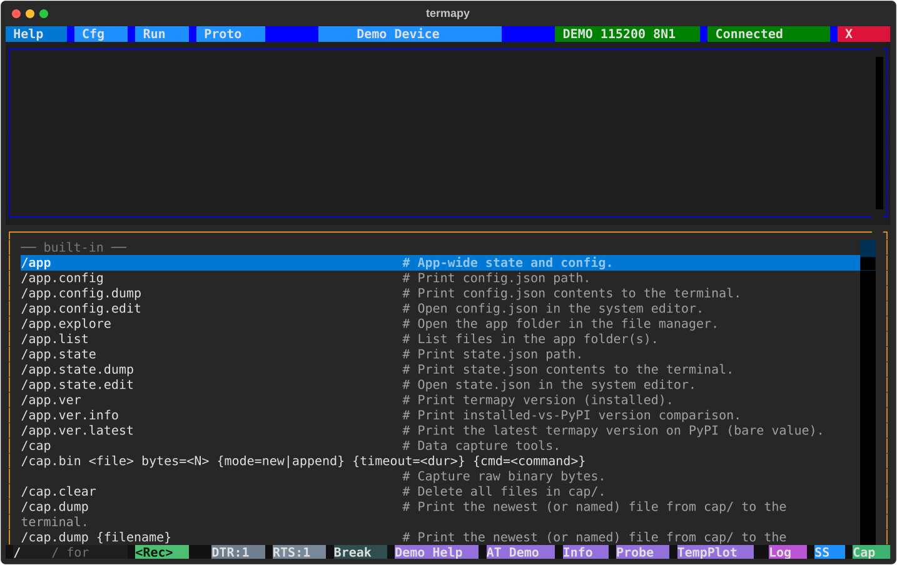

REPL commands¶
Commands prefixed with / (configurable via cmd_prefix) run locally instead of being sent to the serial device.
Click the / button (or just type /) to browse every command with its
synopsis, filtering as you type:

NOTE: If the device you are communicating with uses
/commands that conflict with termapy's, you can change the prefix by settingcmd_prefixin your config (e.g.cmd_prefix: "!"). With!as the prefix,!helpruns the local help command and/foogets sent verbatim to the device.
A selection of the most-used commands. /help prints the full landscape
(every command, including the /app.*, /mcp.*, /port.chip.* and
/proto.crc.<language> families not listed here) and /help <cmd> the
man-page detail for one.
| Command | Description |
|---|---|
/cap.bin <f> ... |
Capture raw binary bytes to a file |
/cap.hex <f> ... |
Capture hex text lines, decode with format spec to CSV |
/cap.stop |
Stop an active capture |
/cap.struct <f> ... |
Capture binary data, decode with format spec to CSV |
/cap.text <f> ... |
Capture serial text to file for a timed duration |
/cap.wire {wait_gap=<dur>} cmd=<command> |
Run a command and show TX/RX bytes inline as hex + repr (debug line endings) |
/cfg [key [value]] |
TUI: open the Cfg picker. Bare in CLI: dump JSON. With args: get/set. |
/cfg.auto <key> <val> |
Set a config key without confirmation |
/cfg.list |
List all config files |
/cfg.help |
Show /cfg help (alias for /help cfg) |
/cfg.info {--display} |
Show project summary; --display opens full report |
/cfg.load <name> |
Switch to a different config by name |
/cfg.show |
Open the current config file in the system viewer |
/cls |
Clear the terminal |
/confirm {message} |
Show Yes/Cancel dialog; Cancel stops a running script |
/credits |
Print acknowledgments (libraries and authors termapy depends on) |
/delay <duration> |
Pause for a duration (e.g. 500ms, 1.5s) |
/edit <file> |
Edit a project file (run//proto/ path) |
/edit.cfg |
Edit the current config file |
/edit.info |
Open the info report in the system viewer |
/edit.plugin {file} |
Edit a plugin, or list available plugins if no name given |
/edit.proto {file} |
Edit a .pro file, or list available files if no name given |
/edit.run {file} |
Edit a .run script, or list available scripts if no name given |
/env.list {pattern} |
List environment variables (all, by name, or glob) |
/env.reload |
Re-snapshot variables from the OS environment |
/env.set <name> <value> |
Set a session-scoped environment variable |
/exit |
Exit termapy |
/expect {timeout} match=<text> |
Wait for serial-output line containing text (blocks; needs block_until) |
/expect.regex {timeout} match=<pat> |
Wait for serial-output line matching regex |
/find <pattern> |
Navigate scrollback matches with an interactive find bar (not over MCP; use /grep there) |
/find.next / /find.prev |
Step to next / previous find match |
/find.clear |
Close the find bar (or run /find with no args) |
/grep <pattern> |
Search scrollback for regex matches (case-insensitive, prints the list) |
/help |
Clean landscape of every command (name + one-liner) |
/help <term> |
Exact match -> man-page detail; otherwise a candidate list |
/help.dev <cmd> |
Show a command handler's Python docstring (developer view) |
/help.plugin |
List loaded plugins grouped by source |
/help.run |
List available .run scripts with descriptions |
/help.target |
Show only imported target device commands |
/log.delete |
Delete the session log file |
/log.dump [N] |
Print the session log (all, or an N-line slice) to the terminal |
/log.fingerprint |
Write a full session fingerprint (OS, terminal, port params) to the log |
/log.show |
Open the session log in the system viewer |
/mcp.catalog |
Print the JSON command catalog (same content as termapy://commands.json MCP resource) |
/mcp.info |
Show MCP-mode status (catalog size, port, profile, captures) |
/os <cmd> |
Run a shell command (requires TERMAPY_OS_CMD_ENABLED=1 in env) |
/port {name} |
TUI bare: open Port picker. CLI bare: list subcommands. With name: open it. |
/port.baud_rate {value} |
Show or set baud rate (hardware only) |
/port.break {ms} |
Send break signal (default 250ms) |
/port.byte_size {value} |
Show or set data bits (hardware only) |
/port.cd |
Show CD state (read-only) |
/port.connect {name} {baud} {mode} |
Connect with optional baud and mode (e.g. /port.connect COM3 9600 N81) |
/port.cts |
Show CTS state (read-only) |
/port.disconnect |
Disconnect from the serial port |
/port.dsr |
Show DSR state (read-only) |
/port.dtr {0\|1} |
Show or set DTR line |
/port.flow_control {m} |
Show or set flow control: none, rtscts, xonxoff, manual |
/port.help |
Show /port help (alias for /help port) |
/port.info |
Show port status, serial parameters, hardware lines, and xfer root |
/port.list |
Chip-aware port table (MFG, CHIP, SPEED, VID:PID, SN, ...) |
/port.mode {baud} {mode} |
Show or set serial mode (e.g. /port.mode 9600 N81) |
/port.parity {value} |
Show or set parity (hardware only) |
/port.ri |
Show RI state (read-only) |
/port.rts {0\|1} |
Show or set RTS line |
/port.stop_bits {value} |
Show or set stop bits (hardware only) |
/print <text> |
Print a message to the terminal |
/print.r <text> |
Print Rich markup text (e.g. [bold red]Warning![/]) |
/profile.info |
Show metadata of the active profile (plus cfg-vs-profile transport drift) |
/profile.load <path> |
Load a device profile and set the active_profile namespace |
/profile.load cmd=<command> |
Fetch a profile from the connected device (replaces the retired /include) |
/profile.load |
Reload the current source (file or device cmd, whichever was last used) |
/profile.save {<path>} |
Write the active profile to disk (default: <cfg_dir>/<cfg_name>.profile.json) |
/profile.unload |
Clear the active profile |
/profile.validate <path> |
Validate an MCP device profile against the schema |
/proto |
TUI: open the Proto picker. CLI: show /proto long-help. |
/proto.crc.calc <n> {d} |
Compute CRC over hex bytes, text, or file |
/proto.crc.find <pkt> |
Identify the CRC algorithm from a captured packet (bin= or asc=) |
/proto.crc.info <name> |
Show CRC algorithm parameters and description |
/proto.crc.list {pat} |
List CRC algorithms (optional glob filter) |
/proto.debug <file> |
Open interactive protocol debug screen for a .pro script |
/proto.help |
Show /proto help (alias for /help proto) |
/proto.hex {on\|off\|toggle} |
Toggle protocol-mode hex display for /proto.send responses |
/proto.list |
List .pro files in proto/, newest first, with size and age |
/proto.run <file> |
Run a binary protocol test script (.pro) |
/proto.send <hex> |
Send raw hex bytes and display response |
/proto.info |
Print current protocol mode state |
/raw <text> |
Send text to serial with no variable expansion or transforms |
/repeat ... |
Repeat a command N times: count=<N> {delay=<dur>} {var=<name>} cmd=<cmd> |
/run {file} {-v} |
TUI bare: open Run picker. CLI bare: list scripts. With file: run it. |
/run.edit <file> |
Open a .run script in the system editor |
/run.help |
Show /run help (alias for /help run) |
/run.legacy {file\|*} |
Find renamed (legacy) command names in scripts; --fix rewrites in place |
/run.list |
List .run files in run/, newest first, with size, age, and summary |
/search <term> |
Deep search: name, help, args, flags, long help (multi-term, -exclude, regex) |
/seq |
Show sequence counters |
/seq.reset |
Reset all sequence counters to zero |
/show <name> |
Show a file |
/show.cfg |
Show the current config file |
/ss.svg [name] |
Save an SVG screenshot |
/ss.txt [name] [N] |
Save a text screenshot (all, or an N-line slice) |
/stop |
Abort a running script |
/term |
Terminal display / session toggles (echo, line_no, timestamps, ...) |
/term.color {on\|off\|toggle} |
Toggle rendering of device ANSI color (TUI and CLI) |
/term.echo {on\|off\|toggle} |
Toggle local echo of device commands (see also /term.echo_repl) |
/term.encoding {name} |
Show or set byte-decoding encoding (utf-8, latin-1, ...) |
/term.eol {cr\|lf\|crlf\|none\|cycle} |
Show or set the line ending sent with commands (session override) |
/term.eol.rx {auto\|cr\|lf\|crlf\|cycle} |
Show or set how received output is split into lines (receive newline) |
/term.hex {on\|off\|toggle} |
Toggle hex display of incoming bytes |
/term.info |
Snapshot the state of every /term.* toggle |
/term.eol.markers {on\|off\|toggle} |
Toggle visible \r \n markers in serial output |
/term.line_no {on\|off\|toggle} |
Toggle line numbers in serial output (TUI only) |
/term.log <text> |
Append a line to the session log without echoing to screen |
/term.output {level\|cycle} |
Show, set, or cycle output level (silent/quiet/normal/verbose) |
/term.request {on\|off\|toggle} |
Session JSON dial: every answer (device or termapy command) becomes a JSON envelope; <cmd> --json is the per-call form |
/term.send <text> |
Send literal text to the serial port (with line ending; canonical name for the bare-line send) |
/term.send_bare_enter {on\|off\|toggle} |
Send line ending on empty Enter |
/term.timestamps {on\|off\|toggle} |
Toggle [HH:MM:SS.mmm] timestamp prefix |
/term.usb_db |
Report bundled USB vendor-database freshness (local read) |
/var {name} |
List user variables, or show one by name |
/var.clear |
Clear all user variables |
/var.list |
List user variables (explicit alias for bare /var) |
/var.set <NAME> <value> |
Set a user variable |
/xfer.root {path} |
Show or set the file transfer root directory |
/xfer.xmodem.recv <file> |
Receive a file from the device via XMODEM |
/xfer.xmodem.send <file> |
Send a file to the device via XMODEM |
/xfer.ymodem.recv {dir} |
Receive file(s) from the device via YMODEM |
/xfer.ymodem.send <file> ... |
Send file(s) to the device via YMODEM (batch) |
Line counts: /ss.txt, /log.dump, and /mcp.log.dump take an
optional N. N>0 saves/prints the last N lines (most recent),
N<0 the first N (oldest); omit it for everything.
Script profiling¶
| Command | Description |
|---|---|
/run.profile <script> |
Run a script with per-line timing (saves CSV to prof/) |
/run.profile.cmd <command> |
Profile a single command |
/run.profile.dump |
Print newest profile to the terminal |
/run.profile.explore |
Open prof/ folder in file explorer |
/run.profile.list |
List profile files |
/run.profile.show |
Open newest profile in system viewer |
Per-folder file commands¶
Each per-config data folder has an owning top-level command (/run for
run/, /proto for proto/, /cap for cap/, /ss for ss/,
/plugin for plugin/, /run.profile for prof/) with one consistent
family of file subcommands:
| Subcommand | Action | Folders |
|---|---|---|
.list |
List files, newest first, with size and age | all |
.explore |
Open the folder in the system file explorer | all |
.show |
Open the newest file in the system viewer | all |
.dump {name} |
Print the newest (or named) file to the terminal | run, proto, plugin, cap, prof |
.rename <old> <new> |
Rename a file (extension kept; never overwrites) | run, proto, plugin, ss, cap |
.clear |
Delete all files | ss, cap (generated output only) |
Examples:
/run.list: list scripts with size, age, and docstring summary/run.dump: print the newest script to the terminal/proto.show: open the newest .pro file in the system viewer/run.rename old.run new: rename a script (.runis kept)/cap.clear: delete all capture files/run.profile.dump: print the newest profile CSV to the terminal